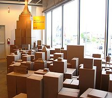
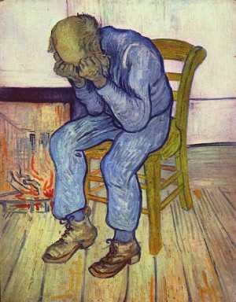
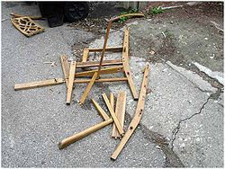
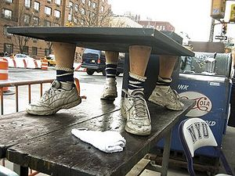
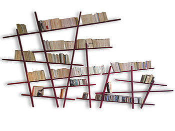
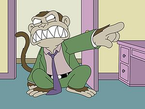
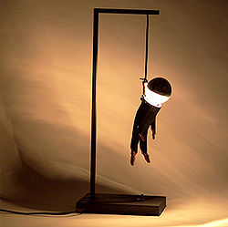

Requisitos
- Dinero.
- Paciencia, muuuuuuuuuuuuuuucha paciencia.
- Manos.
- Herramientas (Martillo, sierra, tornillos, clavos, calvos, pistolas, navajas, katanas, metralletas (AK-47 si es posible), etc...)
- Vecinos.
- Amigos... bueno, esto lo dejamos pasar.
- Casa, con dirección, telefono y hasta techo.
- Poca Dignidad.
- ¿¿He dicho ya paciencia??
- y como no un pepino
Categorías mobiliarias
Haremos un breve resumen de los tipos de muebles armables gracias a IKEA:
Sencillos:
- Lápices
- Cajas (madera y cartón)
- Acelerador de uranio empobrecido con carbono 14
Medios:
- Sillas
- Mesas
- Estanterias
- Lámparas, flexos, mandos de playstation... ah, eso no.
Difíciles:
- Escritorios
- Vitrinas
- Armarios
- Camas
Extremos:
- Coches
- Motos
- Tanques
- Aviones
- Rascacielos
- Puentes de MAPFRE
- Estaciones y Cohetes espaciales.
Imposibles:
Tras esta breve recopilación, empezaremos con las instrucciones más habituales.
Mobiliario Sencillo
- Nivel de paciencia del 1 al 10 -----> 1-2
- Nivel económico --------------------> Básico (1 a 10 €)
- Nivel de Dignidad ------------------> Por los suelos
- Nivel de Fé ------------------------> No hace falta
Lápices
Con ellos dominarás el mundo!! jajajaja!!
Estos ni se compran, solo necesitas colarte en un IKEA e ir buscando las cajas de plástico en donde estén. Es preciso observar la calidad de los lápices, para hacer una crítica en el periódico. Maneras de mangarlos tomarlos:
- Vístete de color madera-carne para pasar desapercibido, muevete tan sigiloso como un Ninja, y cuando este la presa a la vista, lánzate como un tigre ante el último lápiz que quede. Tras esto podrás salir como un Heroe de los establecimientos IKEA (o con varios dientes rotos, peeeeeero...)
- Acóplate a una familia de despistados, y cuando estés preparado, lánzate a por el.
- Toca la alarma de incendio (¡¡Allí más que en ningún sitio la lias parda!!) y mientrás la gente sale despavorida aprovecha la ocasión y coge todos los lápices qe puedas.
Una vez tengas los lápices, puedes crear tu mercado Negro en Ebay traficando con ellos (Precio de salida en las pujas - 2'35€ - 3$ aprox)
Cajas
Para obtener estos magníficos utensilios es necesario comprar algo que tenga que ser guardado en ellas (P. ej: Vasos, todo el mundo quiere vasos!!!! Muahahahahaha!!!). Es posible acceder a ellas de manera ilegal, también por la legal, pero es muy aburrida, estos procesos son:
 Acabarás haciendolo, creeme
- Esperar a la salida de IKEA, y cuando esten cerrando y tirando las cajas de sobra, tu vas y te tiras sobre ellas diciendo "Soy el Puto Amo, si señor!!! JAJAJAJAJAJAJA!!!!"
- Pide desde tu casa algún reloj de aguja, con pilas puestas ¡¡OBLIGATORIO!!, esperas los días que tengas que esperar a que llegue, y cuando haya llegado, pon la siguiente excusa: "Ah! Dios mio, es una bomba, joder! saquela de aquí! rápido... pero, antes de irse, me podría dar la caja??, es que la necesito..."
- Pide desde tu casa algún mueble, esperas los días que tengas que esperar a que llegue, y cuando haya llegado, pon la siguiente excusa: "Oh.. lo siento, pero esque le revelaron el secreto del regalo a mi novi@/amig y ya no lo quiere... pero eso sí, la caja me vendría de
puta madre perlas, si no le importa?"
- Comprate una AK-47 (ya lo advertí antes) y ve a atracar IKEA, y con voz muy seria y cabreado pideles "Dadme todas las
putas malditas cajas joder, dádmelas, o si no os tranco un jugao de balas en el culo a todos, KBRONES!! TIMADORES!!"
- Átate un monton de salchichas con cinta aislante negra (Preferiblemente de IKEA™) y di que si no te dan todas las cajas de cartón del lugar, van a ver la Luna más cerca que nunca, eso acojona eh??
Mobiliario Medio
- Nivel de paciencia del 1 al 10 -----> 3-5
- Nivel económico --------------------> Medio (10 a 50 €)
- Nivel de Dignidad ------------------> Medio
- Nivel de Fé ------------------------> Media
Sillas
Estos objetos son necesarios para tocarse los cojones comodamente, así que es necesario compralos, y por ende, montarlos (Gracias IKEA por tu servicio al cliente :-P) y como montar los productos de IKEA es tan sencillo como caminar en el Hagua, os vamos (os voy...) a explicar detalladamente como se hace:
 Esto les pasa a los noobs como
tú cuando intentan seguir las instrucciones de IKEA, pringao!
- Llama por telefono/móvil/cabina/zapato a los establecimientos de IKEA pidiendo una silla (la que te salga de los güebos).
- Espera tus días/semanas/meses/años/lustros/décadas/siglos/milenios/eones hasta que llamen a la puerta y te traigan tu
jodida amada silla.
- Es hora de abrir la
puta caja precintada con tesafil hasta las trancas (esto suele llevar horas "IP anónima!! traeme las putas tijeras de una puta vez, q esta puta mierda no se abre con los dientes")
- Ahora traga aire (unos 20 litros) y coje las
putas instrucciones y abre tu milimétrica mente para entender las putas indicaciones.
- Es hora de ponerse a montar la
puta silla.
- Saca las
putas piezas de la silla que vienen, cómo no, envueltas en 37 bolsas de plástico, con burbujitas.
- Coge las bolsas de burbujitas y tirate todo el
puto día explotandolas (Los expertos en esto aseguran que prepara psicológicamente a la persona que va a realizar la gran azaña). Cuando hayas terminado disponte a sufrir como una puta cucaracha aplastada por un tren de baja velocidad.
- Coge las piezas e intenta engancharlas tal y como viene en las
putas indicaciones, cuando descubrás que es imposible (de 2 a 5 horas) usa tu imaginación. Menuda obra de arte que te has currao, chaval
- Ya la tienes casi montada (despues de 7 largas horas) y ves que te falta un tornillo (Tranquilo IP anónima, no te ofendas) entonces llama a IKEA a quejarte.
- Después de 1 hora, 25 minutos, 48 segundos de charla, discusión, insultos, reconciliación, línea-erótica-IKEA, y puesta de acuerdo, solo tendrás que esperar otros 7 días hasta que te traigan la pieza que te falta, y cuando se haya ido el repartidor, zas! te das cuenta de que la pieza no encaja (porque eres un pkt, pa q mentir, si en las instrucciones ponía "Pieza de resorte xg4561-tsa y tu le dijiste "un Puto tornillo amarillo, joder, tanto cuesta entenderlo??? "por favor, diga con voz clara la clave de la pieza/resorte/bomba que le falte" "Que te
jodan den).
- Una semana más tarde, después de recordar la cordura, y que la
puta pieza ha llegado, montas de una puta jodida vez la silla, y ahora a sentarse y a tocarse los güebos, joder, si es que merece la pena y tó.
NOTA: Si eres un pakete de nacimiento, la silla se te romperá, entonces solo te queda el suicidio. La forma más elegante de hacerlo es Pedir a IKEA una guillotina, y morir en el intento de montarla.
Método ilegal (Recomendado)
Una forma muy reconfortable y poco ortodoxa de hacer estas reliquias, es a lo cabrón ilegal, no hace falta mucha paciencia y menos dinero. Solo hay que seguir los pasos siguientes:
- Comprate una pistola (ya lo avisé antes).
- Encarga la silla.
- Antes de que llegue el repartidor, ponte un pasamontañas, coge la pistola, y practica voces amedrentadoras para meter miedo.
- Suena el timbre, préparate, abre la puerta y apuntale con la pipa en la chola (cabeza) y obligale a entrar en tu casa.
- Ahora oblígale a abrirla, es mejor que tengas unas tijeras a mano, si no se tirará la eternidad.
- Cuando esté abierta la caja y el tipejo acojonado, oblígale a montar la silla, metiendole prisa.
- Cuando haya terminado de montarla, te quitas el pasamontañas, y le señalas a la webcam de tu
puto portátil de mierda diciendole que es una broma para televisión (si quieres que se vaya tranquilo), si eres un puto cabrón desgraciado, le puedes dejar con el miedo en el cuerpo y sacarlo a patadas de tu puta casa.
Mesas
Lo 1º de todo, ¿Qué es y para que coño sirve una mesa? Una mesa es una estructura que consta de dos patéticas partes:
- Lo que es la tabla (puede ser de madera, hierro, cobre, cinc, cobalto, tungsteno, uranio, plutonio, sodio, tetrafluoruro de carbono, droga, choped, Rutherfodio, molibdeno, galletas, goma, mocos, mierda de perro aglutinada con neptunio, etc.
- Lo que viene(n) siendo la(s) pata(s), que sirven para que parezca que la mesa levita, pueden ser de madera, metal, barritas enrgéticas de Nesquick, bichos palo, saltamontes, saltaeverests, 3 ó más vagabundos, termitas (sustituyen a las patas de madera), etcétera, etc,...)
 Suele ocurrir si sigues a las instrucciones al "pie" de la letra
Utilidades, pues... mmm... ya:
- El breaking dance (el brikindans)
- Comer.
- Desayunar.
- Ayunar.
- Cenar.
- Merendar.
- Dormir.
- Ver la tele.
- Poner el ordenata.
- Bailar.
-
Sexo Hacer comida.
- Dar MCUs con onomatopeyas de gallina como Homer Simpson.
- Etceterear.
Bueeeeno, después de delirar con gilipolleces cosas como esas, os explicificaré destelladamente y analogicaestrafuñocadamente como cojones se monta esto:
Hay dos vías:
- La que no hace falta montarla, osease, pidiendo una mesa que ya venga montada, que lo más dificil va a ser desenvolver la caja, y cojer la mesa hasta estacionaarla en el suelo.
- La que hace falta montarla (¡¡¡¡¡¡¡¡¡¡¡¡¡¡¡¡¡¡¡por queeeeeeeeeeeeeeeeeeeeeeeeeeeeeeeeeeeeeeeeeee!!!!!!!!!!!!!!!!!!) en la que hay que seguir los siguientes pasos:
- Llamar a IKEA (Bien para pedir el encargo, o bien para joder y pedir una pizza)
- Tambien puedes hacerlo por internete, así cabe la posibilidad de elegir la mesa.
- Escoger una mesa de 4 patas por las siguientes razones:
- Son más resistentesa a la hora de
copular comer.
- Las de una pata no se montan, vienen montadas, y con nata, mmm... nata agh...
- Las de dos patas... mmm..., pide una de dos patas, haber cuanto dura.
- Las de tres patas, son trípodes, entonces no son mesas, timadores!!
- Las de 5 patas son, por cojones, redondas, y a quien le gustan las mesas redondas, son una mierda!!! Muerte a las mesas circulares!!.
- Las de 6 patas son rematadamente largas, y por lo visto, en tu
chabola casa de 20 90 m2 no te va a caber ni a hostias.
- Las de 7 patas son un mito, así que quizas no te lleguen nunca!
- Las de 8 patas te pican, ponen telarañas, huevos y te pueden convertir en Mesaspideraman, cosa que no tiene gracia porque:
- No te puedes mover.
- Tienes las habilidades de Espidérman, pero no sabes usarlas.
- Sigues sin moverte.
- Las de 9 patás, a los cojones van.
- Las de 10 patas estan ya en la 5ª dimensión, y no vas a llegar a saber como se usan, yelipolas.
- Encargarla.
- Como veo que no la has encargado, te repito, llama, escoge y encarga (no hace falta que pagues, lo máximo que te puede pasar es que aparezca un cobrador del frac para darte las buenas noches (a hostias).
- Espera a que llega.
- Mientras puedes ver
pr0n la tele.
- O jugar al PES (Pro evolusion soquer).
- Puedes encargarle otro mueble al vecino, solo por joder.
- Apostar con el vecino haber cual de los muebles tarda más en llegar.
- Pagarle al vecino 50 L€ por la apuesta.
- Pagarle al vecino 50 L€ de verdad.
- Recibir una hostia.
- Morirte de asco.
- Llegó tu mesa, desmontada por supuesto, y precintada, por supuesto.
- Abre la caja.
- Con las tijeras pakete.
- Saca las piezas de la mesa (Tabla, 4 patas, 37 variedades de tornillos, las instrucciones, un gnomo, un duende, Bob Esponja, un Bujero negro, un muñeco del Luisma fumando y que si tiras de la cuerda dice "Me parto y me mondo" y un microondas (no se porque, pero así son las cosas :[
- Para montarlas, hay que seguir unas reglas (ritual) especial paralelamente a las
mierda de instrucciones:
- Posicione la tabla de la mesa en el lugar geométrico de los puntos de tu
chabola casa que equidistan de cuatro paredes (Centro de la habitación) tal que los lados de la tabla sean paralelos a las paredes de la Meca.
- Posiciones las cuatro patas (tú no, que solo tienes tres ¬¬) tal que formen 45º con cada lado y con la mediatriz de las mismas en las esquinas de la mesa.
- Tire los tornillos por la ventana y llame a urgencias "por si acaso".
- Queme las instrucciones o hágale Vudú.
- Guarde la caja como si fuera el "Anillo único".
- Coloque las piezas sobrantes sobre la tabla.w
- Ahora coja otra mesa (o la caja mismo, ya que eres pobre, digas lo que digas) y dispongase a realizar el ritual sagrado de todos los días en ella (osea, comer, que hay hambre).
- Por fuerzas místicas del Multiverso que desconoce, la mesa se sentira inútil y se auto-montará SIN necesidad de tornillos, gracias a la fusión de los demás objetos en un pegamento superefectivo (Superglue).
- Ala!
cabroncete majete, ya tienes la dichosa mesa montada, así que deja de comer en la caja y cambiate al rollo-mesa.
Estanterías
Esta cosa cubicoestrafaliariamenterectangular, sirve para poner cosas en sus retozos, o cubos huecos, cosas como: vasos, platos, cuadros, libros, mierdas de perro, droga, choped, 534 L€ (Leuros), a David el Gnomo, a Peter Pan, a Peter Griffin, un dispositivo de localización existencial y guía de impedimentos también llamado GPS (Gilipuertas Portatil System), etcéteras, etc...
Bueno, ahora empezaré a explicaros como montar esta gran mierda obra de arte:
- Llamar por telefono, movil o zapatilla a IKEA (esto va a ser siempre, aunque también puedes ir andando desde donde estés a Sevilla o a Mallorca, nadando, y comprartelo allí y luego traertelo de vuelta a casa, poca cosa...).
- Esperar a que te cojan el telefono.
- Colgar.
- Enchufar el teléfono.
 Si optaste por montar tu mismo el mueble, la liaste parda y quedó así
- Llamar de nuevo.
- Esperar.
- Colgar de nuevo.
- Cagarte en los muertos del vecino.
- Dar corriente eléctrica a tu casa.
- Llamar de nuevo.
- Por el teléfono ¬¬.
- Esperar.
- Se te ha ido la luz.
- Vuelve a dar corriente.
- Suicidate
- Vuelve a llamar.
- Contestale al tipejo que dice "Establecimientos IKEA digame".
- Pedir una McWooper con ketchup.
- Disculparte, y pedirle una estantería.
- El Kbrón te ha colgado, así que vuelve a llamar.
- Encargar una estantería de 100x80x253 (en caso de vivir en un 20 m2, que sea un 30x30x70).
- Dale tu número de visa oro, que se lo des cohones!
- Mandale a la mierda antes de colgar.
- Esperar... esperar... esperar... desesperar... enojarse... empezar a salir humos por la cabeza... ser gilipollas...
- Tres meses después, llegó el pedido, al fin tienes tu McWooper con Ketchup!.
- Al año siguiente llega la estantería.
- Le dices al vecino que si te monta la estantería le darás 1000 L€ (Leuros) el 30 de Febrero del 2010.
- Y en tres meses ya la tienes montada, como ves, no es dificil.
Ahora como en Art Attack, haremos un breve y sincero resumen de lo resultado.
- Has tardado 1 año y 3 meses en tener el mueble montado.
- Te has gastado 134 L€ en un mueble de 50 L€ y 1000 L€ imaginarios, debido a:
- 27'33333333333333333333333333333333333333333333333333333333333333333333333333333... llamadas de telefono, una McWooper con Ketchup, un atraco en el banco (si, tu stabas tan trankilo en el banco del parke, sentado, y derrepente un yonki te pone la navaja en el cuello y se lleva tus 14 € con 32 centimos, un vale de descuento de 30% en telecondón, y tu peluche preferido) y te caíste de culo en un imán (las consecuencias las sufren las monedas de 1, 2 y 5 céntimos)
- Te emborrachaste porque pensabas que no llegaría nunca (Tu McWooper con Ketchup)
- Te cojiste un pedo monumental porque no iba el Internet.
- Te volviste a emborrachar porque no llegaba la estantería.
- Te emborrachaste porque llegó el McWooper con Ketchup..
- Cojiste otro pedo porque volvió internet.
- Te volviste a emborrachar porque llegó el estante.
- Pagaste tú el dinero de cada vez que ibas al hospital por coma etílico o de etanol (C2H6O) porque el seguro médico no acapara essos gastos.
- Y más cosas que no hay que especificar relacionadas con el videoclub...
- ¡¡¡NO!!! has montado el mueble.
- Tienes el mueble.
Y esto es todo sobre las estanterías artemaníacos (tantin tatatata tatatatatatantin tatata tatatatatachannnn (música de Art Attack, como no la oigas es que es pa matarte IP anónima))
Lámparas
Si! aunque no te lo creas, estas mierdas tienes que montarlas. Que para que sirven, yo que sé, para que la casa tenga menos espacio, otra cosa nose... Os preguntareis también, porque esta mierda está en mobiliario medio y no en sencillo?? si solo hay que enroscar... ¡¡JA!! que te lo has creido, las lámparas vienen de tal forma que solo existe una forma de enganchar las putas piezas para que funcione. La montaras muchas veces, y rápido, pero nunca funcionará a menos que lo hagas siguiendo las siguientes instucciones militares:
- Hipotéticamente ya hemos hecho los 30 puntos de llamar, gastar broma, colgar, llamar otra vez etc, hasta encargar lámpara y ella venir por inercia.
- Llega la lámpara en su peculiar caja de 30 m3, que pone muy frágil (OJO! eso significa que no es frágil), que está precintada con 100 metros de tesafil (celo).
- Tres días quitando tesafil, y la caja ha reducido su volumen a 20 m3 (eso dice mucho).
- Abres la caja y descubres
un mundo de fantasía y erotismo que sí hay una lampara, a cachos, pero lánpara.
- Te tomas un respiro, tómate un Kit-Kat.
- Coge aire, mucho aire.
- Expira aire, mucho aire.
- Ahora disponte a sacar cada pieza de la lámpara, y mira detenidamente las instrucciones.
- Se que no entiendes nada, así que quemalas, rompelas o hazte un porro con ellas, pero por ningún caso intenta seguirlas o acabarás aprendiendo francé, alemán e incluso griego antes de saber como coño se monta eso.
- Ahora me harás caso a mí, y cogeras todos los tubos de la lámpara y los pondras es una sección de la habitación; pondrás la bombilla al lado de los tubos; te pondrás lo que es el capuchón en la cabeza (Según ultimos estudios
anticientíficos, esto ayuda a concentrarse mejor, aunque también sirve de pararrayos, pero eso carece de importancia...); y por último ponte encima de la base, soporte o cacho de cartón donde se apolla la lámpara.
- Desde esa posición, podrás sentirte lámpara, entonces una ráfaga de
rayos de tormenta ideas se abalanzarán sobre tu cabezay sabrás los pasos de como se monta una lámpara... vale, es mentira, pero acojona eh!.
- Ahora de verdad, desde esa posición lo que pareces es un gilipollas, y el vecino te hará una foto y la colgará en el Feisbuk, así que deja de hacer el paria, y bájate.
- Vale, coje los tubos y enroscalos todos como te salga del nabo, ellos se auto montarán bien por que le darás pena.
- Ahora pasa el cable por el tubo si no sale por el otro extremo, echa un ojo; si tú tampoco sales del tubo, entonces estás en otra dimensión, y ya puedes olvidarte de montar la lámpara.
- Si sale el cable, ahora, sácalo del tubo porque lo has metido al revés
gilipollas.
- Ahora mételo por el otro lado.
- Bien, ahora enrosca el capuchón de la lámpara en el tubo... pero joder!!! saca la cabeza de ahí gilipollas!!
- Ya estamos a punto de acabar, y como sé que te has esforzado mucho, te voy a dar un descanso...
- ..
- ...
- ....
- .....
- ......
- .......
- ........
- .........
- ...........
- ..............
- ...................
- ........................
- ................................
- ...........................................
- ....................................................
- ZzZzZzZzZzZzZzZzZzZzZzZzZzZzZzZz... ¡¡¡DESPIERTA PUTO VAGO!!!
- Ahora solo queda lo más difícil, poner la bombilla de tal forma que funcione.
- Coge la bombilla.
- Esa no gilipollas.
 Si, de esta forma, así lo intimidarás
- Esa, ahora ponla de tal forma que la parte de metal con forma de rosquilla (mmmm... rosquillas...) quede perpendiciularmente al tubo, y disponte a enroscarla, con suavidad... al principio, y como ves que eso no erosca ni a la de tres, hazlo a lo bestia, pero procura no cargártela (supongo que será facil).
- Ahora enchúfala en el enchufe...
- Dios!!!, ve ahora mismo al hospital, lo que acabas de hacer te puede dejar estéril, gilipollas!!!
- Dos dias después, vuelves a casa con eso escayolado... y coges LA PUNTA DEL CABLE QUE TIENE EL ENCHUFE Y LO ENCHUFAS.
- Ahora queda lo más difícil, y es pulsar el botón de encendido, para esto hay que seguir unas pautas muy meticulosamente:
- Levanta el dedo índice de tu mano.
- Señala al maldito botón con esta cara-------------------->
- Acerca con cuidado el dedo al botón, siempre con la cara de mono asesino, ¡IMPORTANTE!
- Toca la superficie cilíndrica medular del boton y pulsa con taoda la ira del mundo!!!
 ¡¡¡¡Pobrecita, por tú culpa!!!!
- La lámpara se acojonará tanto, que al ver que no puede gritar, se encenderá emitiendo una luz intensa.
- Bien!!, lo has logrado
gilipollas IP anónima, ahora te sentiras orgulloso de la mierda que has creado y ya no necesitarás la luz del sol, así que destruye el sol con tus propias manos, mwahahahahaha...
¡ACHTUNG!
Si has sido un so memo, y no has seguido mis pasos, sino que has sido un cretino agilipollado que se creía que siguiendo las instrucciones le iba a salir mejor, es que eres un melón y un iluso, y por tu puta culpa le has provocado el suicidio a la pobre lámpara dejandola así---------->
Mobiliario Difícil
- Nivel de paciencia del 1 al 10 -----> 6-7
- Nivel económico --------------------> Alto (50 a 200 €)
- Nivel de Dignidad ------------------> Normal
- Nivel de Fé ------------------------> Alta
Escritorios
¿Qués es un escritorio?, ¿Pa'qué cojones sirve?, ¿Cómo es que el cabrón de mi vecino tiene uno y yo no? ー Bien, si te haces estas preguntas, definitavamente esres un ignorante... peeeeeeeeero, aún así, las responderé:
- Es una seudomesa que sirve para hacer sudocosas que se hacen con las mesas. Por ejemplo, escribir (De ahí Escritorio), dormir, comer, romperlo, sobarlo,
follar ver la tele, mearse encima, amontonarlos, etc.
- Ya lo he dicho, en general, para decorar...
- Porque eres pobre e ignorante, y tu vecino es rico e ignorante, pero rico.
A continuación, os dejaré una breve (largo de cojones) lista de los pasos que has/habeis de seguir:
- Haber, levántate de la cama y procura no caerte.
- Levántate del suelo, y procura no caerte otra vez.
- Llama a una ambulancia para la fractura que te has hecho en el bolsillo.
- Bien, ahora sal de tu cuarto, ve a la cocina, abre el frigorífico, saca el teléfono del frigorífico (o el microondas del frígorifico que tiene dentro una sandwichera, que tiene dentro un tostador, que tiene dentro el teléfono) y disponte a marcar el nº de IKEA.
- Disponte a esperar horas de contestador automático de una encuesta.
- No le des a la opción equivocada o te cascarán.
- Ahora encarga el mierda escritorio, y recuerda, ES CARO!
- Mientras esperas, puedes fundar tu propia mafia, en la que El Luisma, Bob Esponja y un friki magiquero serán tus superiores.
- Cuando te aburras de la Mafia, puedes tomar otras alternativas como:
- Comprarte un XBox por IKEA.(Si eres emo).
- Ir al Carrefour a ver los escritorios más baratos, y de mejor calidad que los de IKEA.
- Morirte de asco.
- Resucitar de asco.
- Aprenderte la Filosofía de Nietzsche.
- Ser un Superhombre.
- Ser un Supergilipollas integral.
- Ver
pr0n, manga, anime, series de acción, series de C. Norris, patadas giratorias de C.N. en tu cara, etc.
- Aprenderte la Tabla Periódica de Oscar Mayer (importante el salchichonio).
- Estar horas perdidas mirando al cielo, a ver si ves un OVNI.
- Decir etcétera mil veces.
- Contar hasta infinito.
- Cuando hayas terminado de hacer todas esas
gilipolleces cosas, entonces llegará el escritorio Ikeareado.
- Empieza la batalla, ya tienes las tijeras en la mano dispuestas a matar a cuaquier cacho de tesafil que se le resista.
- Tras una dura y larga batalla contra el embalaje (7-1, gana el embalaje), abres la jodida caja.
- OJO!, ponte gafas de sol antes de abrirla, porque las instrucciones están en la superficie.
- Con unas pinzas, retira las instrucciones, después desazte de ellas sin piedad (Quemandola, crucificandola, usandola de papel del culo, dándosela a tu mascota para que se la coma (o se limpie el culo con ella), exortizandola, poniéndola atada frente a la televisión viendo los Lunnis, o los Teletubbies, o yo que sé, viendo Fama; fumatelas, aunque puede producir la enfermedad del Descolocamientitis aguda con retardos mentales, hacer un avión y tirarlo por la ventana, impactando este en el ojo de una persona cualquiera, etc).
- Ahora saca las partes del escritorio, y ordenalas por tamaño, descubrirás que hay cientos de tamaños diferentes en sólo 20 piezas (misterios e incertidumbres de la metafísica Ikeista).
- Ahora haz un pirámide con los tablones.
- Ahora deshaz la pirámide.
- Ahora haz una pirámide invertida con los tablones.
- Intenta sentarte en dicha pirámide sin caerte ni caerla.
- Ahora levantate de los escombros y haz una carretera con los tablones.
- Ahora, que ya has perdido horas haciendo gilipolleces con los tablones de los cojones, te explicaré como cojones se monta.
- Busca una habitación grande, la más grande que tengas, y retira toda la mierda que hay en ella (no hace falta que salgas tú).
- Mete los tablones en la habitación, y espárcelos arbitrariamente.
- Ahora coje los tornillos y desperdígalos por toda la habitación.
- Cómprate la saga completa, con todos los episodios y especiales de los Lunis, los metes de cualquier forma todo en un deuvedé, metes el ordenata en la habitación, metes uno Home Cinema en ella, conectado al ordenador, y metes el deuvedé de los Lunis.
- Procede a ejecutar el disco.
- Sube el volumen al máximo, tanto en el jordenador, como en el Jom cinema.
- Cierra la puerta de la habitación, y deja solo al escritorio viendo los lunis.
- Espera una semana.
- Ahora, especificamente ahora, habrá acabado el DVD, y abrirás la puerta que te transportará a otra dimensión pokemon. Pulsa Start+Select+A+B para entrar en la dimensión de Ikeamon, y desde ahí comenzaras una aventura inolvidable. Empezaras con un Ikeamon al nivel 5, puedes escoger entre Charmantuerc, Squirtornill, o Bulvisagr. Empezarás en Pueblo Iketa, y tendrás que subir al nivel 101 cada Ikeamon que consigas durante la aventura. Una vez conseguido le das a guardar partikeada, y cuando ponga, ikeguardando, cierras los ojos y los vuelves a abrir. ENHORABUENA, has conseguido al Ikeamon Escritorizard al nivel 102'4, con las habilidades de:
- Joder la marrana.
- Estorbar.
- Ikearada.
- Poseso.
- Después de tantos trámites Frikeros, tendras tu maravilloso escritorio, y recuerda, guarda la partida antes de apagar ;)
Vitrinas
¿Estás harto de tener los vasos y las copas de cristal tiradas por los suelos?¿Tu retrete no es lo suficientemente grande como para acapararlos?¿No eres capaz de tocar la sinfonía de Beethoven con las copas humedecidas?¿No sabes donde guardar toda esa droga harina? No te preocupes IKEA YO tengo la solución: Una vitrina. ¿Que qué es?, pues como bien dice, "ví" de ver, y "trina" de Trinaranjus, q es q tú viste una trina, de naranja o de limón, pero viste una trina.
En fin, como siempre, llamamos a IKEA, pero al pedir una vitrina, todo cambia, esto sucede:
- Una vez pronunciado la palabra vitrina, el tipejo al otro lado del telefono se pone nervioso.
- Te preguntará si estás seguro, varias veces.
- Respóndele que sí.
- Ahora te avisará diciendo q todos los que encargaron una vitrina han desaparecido, se dice q te trasporta a un mundo paralelo...
- Igualmente aceptarás.
- Bien, ahora, solo hay que esperar a que llegue la vitrina.
- Mientras esperas, como te aburres, te vas de viaje a Los Angeles, tomando el vuelo 815 de Oceanic.
- Por desgracia, tu avión se estrella en una misteriosa isla, llena de osos polares y un humo negro que azecha, llamado por todos como "el monstruo".
- Durante tu estancia en la isla, harás buenas compañias, pero verás muertes, y descubrirás un Búnker.
- En la isla no estáis solos, hay unos tipejos raros, llamados "los otros" que os haran putadas a diestro y siniestro.
- Abrireis el Búnker, y estaréis pulsando 4-8-15-16-23-42 durante mucho tiempo hasta q implosione.
- Odiarás al calvo.
- Un día de estos, en la isla, verás caer una caja de IKEA que pone "muy fragil", entonces todos empezareis a extrañaos, gente se suicidará, y cuando abras la caja, te impactará.
- ¡Es la vitrina que pediste!
- Con esto sabrás q los encargos de IKEA, aunque tardíos, son eficaces, por que tienen un ordenador que te rastrea.
- Al lado de la caja esta, como no, el tipejo q te pide la propina.
- Cojerás la AK-47 que tiene el moro, y te lo cargarás.
- Ahora debes montar la vitrina. Solo si lo haces podrás salir de ahí, o al menos eso pone en las instrucciones, q por casualidad, el nº de referencia es 4-8-15-16-23-42-t-jodes.
- Con las instrucciones tienes papel del culo pa' tres meses.
- Ahora debes aprovechar que estás en "la isla" para montarlo.
- Es muy sencillo, debes encontrar a "los otros", y obligarles a decirte donde esta "yeicov"
- Una vez llegues, el tipejo, al ver la estantería, gritará con locura y te desmallarás.
- Cuando despiertes, estarás en medio de la playa y a tu lado la vitrina.
- Días más tardes, contactais con IKEA Industries, que os sacarán de la isla en un barco con forma de Establecimientos IKEA.
- Durante el viaje podrás visitar todos los puestos y cosas de IKEA. Te indemnizarán con 100 vales de descuento de un 75% en productos IKEA.
- Tú volverás trankilito a casa, pero no sabes el oscuro secreto que guarda IKEA y que la relaciona con "La Isla" mwahahahahahahahahahahahahaha... aunque ahora que lo pienso, yo tampoco lo sé, D'oh!!
Weno, ahora ya tienes tu mierda vitrina para guardar la coca los vasos y las copas. 4-8-15-16-23-42, 4-8-15-16-23-42, 4-8-15-16-23-42, 4-8-15-16-23-42, 4-8-15-16-23-42, 4-8-15-16-23-42, 4-8-15-16-23-42, 4-8-15-16-23-42, 4-8-15-16-23-42, 4-8-15-16-23-42, 4-8-15-16-23-42, 4-8-15-16-23-42, 4-8-15-16-23-42, 4-8-15-16-23-42, 4-8-15-16-23-42, 4-8-15-16-23-42...
 De: La Frikipedia, la enciclopedia extremadamente seria.
De: La Frikipedia, la enciclopedia extremadamente seria.